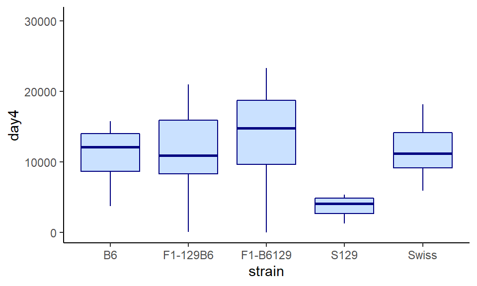
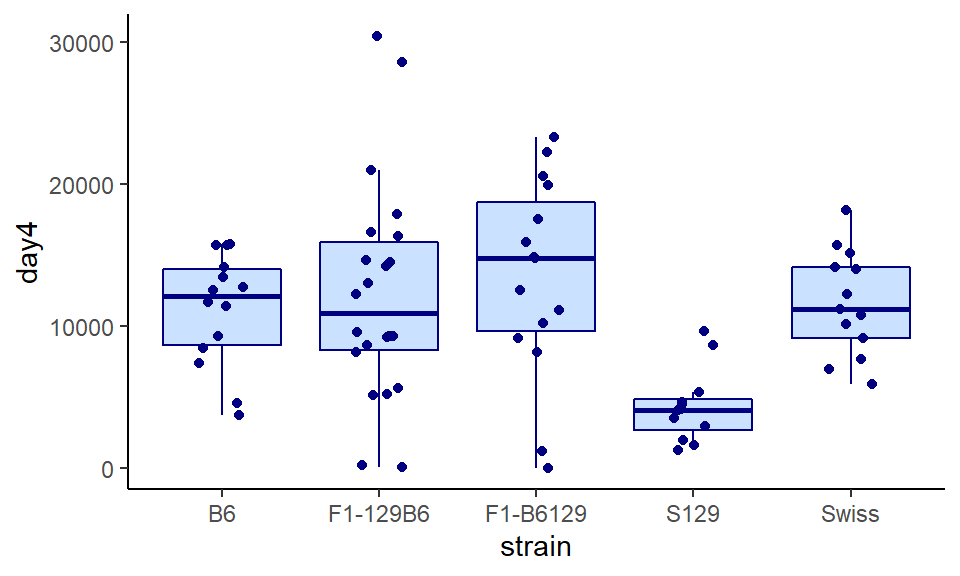
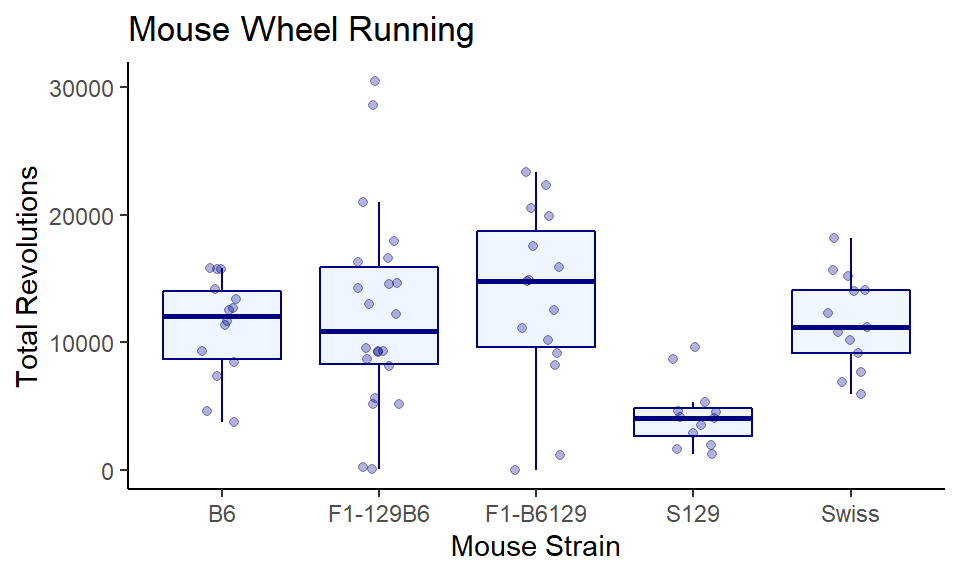

13 Permutation Testing
An example of permutation testing and the theory behind it.
13.1 t-test Permutation
Let's look at our two independent samples of exam scores:
library(tidyverse)
anastasia <- c(65, 74, 73, 83, 76, 65, 86, 70, 80, 55, 78, 78, 90, 77, 68)
bernadette <- c(72, 66, 71, 66, 76, 69, 79, 73, 62, 69, 68, 60, 73, 68, 67, 74, 56, 74)
# put into a dataframe:
dd <- data.frame(values = c(anastasia, bernadette),
group = c(rep("Anastasia",15), rep("Bernadette", 18))
)
dd## values group
## 1 65 Anastasia
## 2 74 Anastasia
## 3 73 Anastasia
## 4 83 Anastasia
## 5 76 Anastasia
## 6 65 Anastasia
## 7 86 Anastasia
## 8 70 Anastasia
## 9 80 Anastasia
## 10 55 Anastasia
## 11 78 Anastasia
## 12 78 Anastasia
## 13 90 Anastasia
## 14 77 Anastasia
## 15 68 Anastasia
## 16 72 Bernadette
## 17 66 Bernadette
## 18 71 Bernadette
## 19 66 Bernadette
## 20 76 Bernadette
## 21 69 Bernadette
## 22 79 Bernadette
## 23 73 Bernadette
## 24 62 Bernadette
## 25 69 Bernadette
## 26 68 Bernadette
## 27 60 Bernadette
## 28 73 Bernadette
## 29 68 Bernadette
## 30 67 Bernadette
## 31 74 Bernadette
## 32 56 Bernadette
## 33 74 BernadetteWe can plot these data as boxplots to get a sense of the within group variation as well as the observed differences between the groups:
ggplot(dd, aes(x = group, y = values, fill = group)) +
geom_boxplot(alpha=.3, outlier.shape = NA) +
geom_jitter(width=.1, size=2) +
theme_classic() +
scale_fill_manual(values = c("firebrick", "dodgerblue"))
Now, from our two independent samples, we can directly observe what the difference in sample means is. This is just calculated by subtracting one sample mean from the other:
meandif <- mean(anastasia) - mean(bernadette) # 5.48
meandif## [1] 5.477778So, from our samples, we observed a difference in grades of 5.48 between the groups. Typically, we would run an independent t-test to test whether these two samples came from theoretical populations that differ in their means:
t.test(anastasia, bernadette, var.equal = T)##
## Two Sample t-test
##
## data: anastasia and bernadette
## t = 2.1154, df = 31, p-value = 0.04253
## alternative hypothesis: true difference in means is not equal to 0
## 95 percent confidence interval:
## 0.1965873 10.7589683
## sample estimates:
## mean of x mean of y
## 74.53333 69.05556This Student's t-test (notice var.equal=T) suggests that this is a significant difference, meaning that the groups do differ in their population means.
However, this test relies on several assumptions (see section xx.x.x). Instead, we could apply a permutation test that is free of assumptions.
Essentially what we are going to do is ask how surprising it was to get a difference of 5.48 given our real data. Put another way, if we shuffled the data into different groups of 15 and 18 (the respective sample sizes of Anastasia and Bernadette), would we get a difference in sample means of greater or lower than 5.48? If we did this thousands of times, how many times would we get differences in sample means above 5.48?
Let's apply this theory to just one permutation.
First, we combine all the data:
set.seed(1) # just to keep the random number generator the same for all of us
allscores <- c(anastasia, bernadette)
allscores## [1] 65 74 73 83 76 65 86 70 80 55 78 78 90 77 68 72 66 71 66 76 69 79 73 62 69
## [26] 68 60 73 68 67 74 56 74Next, we shuffle them into new groups of 15 and 18.:
x <- split(sample(allscores), rep(1:2, c(15,18)))
x## $`1`
## [1] 80 78 71 73 65 68 67 74 72 74 76 83 68 70 69
##
## $`2`
## [1] 74 90 69 68 78 66 73 76 62 56 79 65 60 73 55 77 66 86We have two brand new samples that contain all of the scores from our original data, but they've just been shuffled around. We could look at what the difference in sample means is between these two new samples:
x[[1]] # this is our shuffled sample of size 15## [1] 80 78 71 73 65 68 67 74 72 74 76 83 68 70 69x[[2]] # this is our shuffled sample of size 18## [1] 74 90 69 68 78 66 73 76 62 56 79 65 60 73 55 77 66 86mean(x[[1]]) # mean of the new sample of size 15## [1] 72.53333mean(x[[2]]) # mean of the new sample of size 18## [1] 70.72222# what's the difference in their means?
mean(x[[1]]) - mean(x[[2]]) ## [1] 1.811111The difference in sample means is 1.81, which is a lot smaller than our original difference in sample means.
Let's do this same process 10,000 times! Don't worry too much about the details of the code. What we are doing is the above process, just putting it in a loop and asking it to do it 10,000 times. We save all the results in an object called results.
results<-vector('list',10000)
for(i in 1:10000){
x <- split(sample(allscores), rep(1:2, c(15,18)))
results[[i]]<-mean(x[[1]]) - mean(x[[2]])
}
head(unlist(results)) # these are all our mean differences from 10,000 shuffles of the data. We're just looking at the first 6.## [1] -1.8555556 -2.5888889 4.0111111 -3.9333333 0.2222222 3.5222222We can actually make a histogram showing the distribution of these differences in sample means.
df <- data.frame(difs = unlist(results))
ggplot(df, aes(x=difs)) +
geom_histogram(color="black", fill="green", alpha=.4) +
geom_vline(color="navy",lwd=1,lty=2,xintercept = 5.48) +
theme_classic()+
ggtitle("Mean Differences from \n 10000 Permutations of Raw Data")## `stat_bin()` using `bins = 30`. Pick better value with `binwidth`.
This histogram shows that for some of our 10,000 shuffles, we actually got some differences between our two samples of higher than 5.48 (the dotted blue line), but the vast majority of shuffles led to samples that had mean differences lower than 5.48. In fact, several shuffles led to samples where the sample of size 18 (Bernadette in the original data) had a sample mean that was higher than the sample of size 15 (Anastasia in the original data).
We can directly calculate how many times out of 10,000 shuffles we got a difference in sample means that was greater than 5.48
sum(unlist(results) > 5.48) # 202 times out of 10000## [1] 215To convert this to a p-value, we simply divide this value by the number of shuffles we ran - which was 10,000.
sum(unlist(results) > 5.48) /10000 # which is 0.0202 proportion of the time## [1] 0.0215So our p-value is p=0.0215 which is similar to a one-tailed p-value.
13.1.1 Example 2:
Let's take a look at a second example. Here, we have various subjects rating their anxiety levels. They do this after either taking a new anxiolytic drug or a placebo. The subjects in each group are independent of each other. The placebo group has 19 subjects and the drug group has 21 subjects.
The data:
placebo <- c(15, 16, 19, 19, 17, 20, 18, 14, 18, 20, 20, 20, 13, 11, 16, 19, 19, 16, 10)
drug <- c(15, 15, 16, 13, 11, 19, 17, 17, 11, 14, 10, 18, 19, 14, 13, 16, 16, 17, 14, 10, 14)
length(placebo) #19## [1] 19length(drug) #21## [1] 21If we were interested in doing a Student's t-test, we might want to check whether the data are approximately normal. We could perform Shapiro-Wilk tests to do this:
shapiro.test(drug) # approximately normal as p>.05##
## Shapiro-Wilk normality test
##
## data: drug
## W = 0.95184, p-value = 0.3688shapiro.test(placebo) # not enough evidence to be normal as p<.05##
## Shapiro-Wilk normality test
##
## data: placebo
## W = 0.88372, p-value = 0.02494From this we find that the placebo group is not approximately normally distributed (p value of the Shapiro-Wilk test is <.05). We could do a non-parametric test such as Wilcoxon Ranked Sum test (see xxx.xxx), but an alternative strategy is to perform a permutation test.
Let's first plot the data, and then look at our observed difference in anxiety scores between our two independent samples:
# put into dataframe - long format
df <- data.frame(anxiety = c(placebo, drug),
group = c(rep("placebo", length(placebo)),
rep("drug", length(drug))
)
)
head(df)## anxiety group
## 1 15 placebo
## 2 16 placebo
## 3 19 placebo
## 4 19 placebo
## 5 17 placebo
## 6 20 placebo#boxplots
ggplot(df, aes(x=group, y=anxiety, fill=group)) +
geom_boxplot(outlier.shape = NA, alpha=.4) +
geom_jitter(width=.1) +
theme_classic() +
scale_fill_manual(values=c("orange", "brown"))
mean(placebo) - mean(drug) #2.128## [1] 2.12782So our observed difference in sample means is 2.128. In the permutation test, what we'll do is shuffle all the scores randomly between the two groups, creating new samples of the same size (19 and 21). Then we'll see what difference in sample means we get from those shuffled groups. We'll also do this 10,000 times.
allvalues <- c(placebo, drug)
results<-vector('list',10000)
for(i in 1:10000){
x <- split(sample(allvalues), rep(1:2, c(19,21)))
results[[i]]<-mean(x[[1]]) - mean(x[[2]])
}
head(unlist(results)) # these are the first six of all our mean differences from 10,000 shuffles of the data.## [1] -0.8796992 -0.7794486 -1.2807018 -0.4786967 2.5288221 1.1253133Let's plot the distribution of these data to see what proportion of times our shuffled groups got samples that were greater than 2.128.
df0 <- data.frame(difs = unlist(results))
ggplot(df0, aes(x=difs)) +
geom_histogram(color="black", fill="pink", alpha=.4) +
geom_vline(color="navy",lwd=1,lty=2,xintercept = 2.128) +
theme_classic()+
ggtitle("Mean Differences from \n 10000 Permutations of Raw Data")## `stat_bin()` using `bins = 30`. Pick better value with `binwidth`.
It looks like very few times did we get two samples that had differences in sample means that were greater than 2.128. We can calculate exactly how many times, and express this as the proportion of times we got a difference in sample means greater than 2.128:
sum(unlist(results) > 2.128) # 109 times out of 10000## [1] 113sum(unlist(results) > 2.128) /10000 # which is 0.0109 proportion of the time## [1] 0.0113So, in this case we can say that the probability of getting a difference in sample means between the drug and placebo groups that was larger than our observed difference of 2.128 was p = 0.0109. This is very strong evidence that the observed difference is significantly greater than we'd expect by chance.
13.2 Correlation Coefficient Permutation Tests
You can apply the logic of permutation tests to almost any statistical test. Let's look at an example for Pearson correlations.
In these data, we are looking at 15 subjects who are completing a task. We measured the time they spent on the task and their high scores.
library(tidyverse)
df <- read_csv("data/timescore.csv")## Parsed with column specification:
## cols(
## subject = col_character(),
## time = col_double(),
## score = col_double()
## )head(df)## # A tibble: 6 x 3
## subject time score
## <chr> <dbl> <dbl>
## 1 1A 5.5 3
## 2 2B 2.4 6.9
## 3 3C 8.8 17.9
## 4 4D 7 10.5
## 5 5E 9.3 12.2
## 6 6F 2.5 3.5If we make a scatterplot of the data, we can see that those who spent longer on the task tended to get higher scores:
# scatterplot
ggplot(df, aes(x = time, y = score)) +
geom_point() +
stat_smooth(method = "lm", se=F)
Using a standard approach, we could find the correlation of these two variables and run a signficance test using cor.test(). We can see that there is a moderate Pearson's r of r=0.55 which is statistically significant (p=0.031).
# regular significance test
cor.test(df$time,df$score) #r=0.55, p=0.031##
## Pearson's product-moment correlation
##
## data: df$time and df$score
## t = 2.4258, df = 13, p-value = 0.03057
## alternative hypothesis: true correlation is not equal to 0
## 95 percent confidence interval:
## 0.0643515 0.8324385
## sample estimates:
## cor
## 0.5582129We could take an alternative tack, and decide to do a permutation test. The idea here is again, how surprising is it to get a correlation of 0.55 with these data? Were there other ways of ordering the x and y variables to get higher correlation coefficients?
Let's look at our y axis variable, the score:
set.seed(1) # just doing this so all our results look same
df$score # actual data in order## [1] 3.0 6.9 17.9 10.5 12.2 3.5 11.0 7.6 8.4 13.4 10.1 9.0 10.1 17.7 6.8This is the original order of the data. If we use sample() we can shuffle the data:
sample(df$score) # actual data but order shuffled## [1] 10.5 3.5 7.6 10.1 17.9 8.4 13.4 17.7 12.2 3.0 6.9 10.1 9.0 6.8 11.0Let's shuffle the score again, but this time store it in the original dataframe:
df$shuffle1 <- sample(df$score) #create a new column with shuffled data
df## # A tibble: 15 x 4
## subject time score shuffle1
## <chr> <dbl> <dbl> <dbl>
## 1 1A 5.5 3 7.6
## 2 2B 2.4 6.9 10.1
## 3 3C 8.8 17.9 10.1
## 4 4D 7 10.5 12.2
## 5 5E 9.3 12.2 8.4
## 6 6F 2.5 3.5 13.4
## 7 7G 4.8 11 6.9
## 8 8H 4.1 7.6 3.5
## 9 9I 5 8.4 3
## 10 10J 2.9 13.4 17.7
## 11 11K 6.4 10.1 6.8
## 12 12L 7.7 9 11
## 13 13M 9.3 10.1 9
## 14 14N 8.3 17.7 17.9
## 15 15O 5.1 6.8 10.5If we plot this shuffled y (score) against the original x (time), we now get this scatterplot, which basically shows no relationship:
# this is what that new column looks like:
ggplot(df, aes(x = time, y = shuffle1)) +
geom_point() +
stat_smooth(method = "lm", se=F)
And the correlation for this new scatterplot is really close to 0! r = 0.0005:
cor.test(df$time, df$shuffle1) # now relationship is a bit negative##
## Pearson's product-moment correlation
##
## data: df$time and df$shuffle1
## t = 0.0016429, df = 13, p-value = 0.9987
## alternative hypothesis: true correlation is not equal to 0
## 95 percent confidence interval:
## -0.5119267 0.5125988
## sample estimates:
## cor
## 0.0004556502We could shuffle the score variable even more times, and directly calculate the r value aginst the time variable for each shuffle using cor().
# we can do this many times
cor(df$time, sample(df$score)) # r = 0.35## [1] 0.3023584cor(df$time, sample(df$score)) # r = 0.04## [1] -0.05905503cor(df$time, sample(df$score)) # r = -0.06## [1] -0.4665168cor(df$time, sample(df$score)) # r = 0.15## [1] -0.435933As you can see, the more shuffles we do, we get varied values of r. What we really should do is perform 10,000 (or another really high number) shuffles of the score variable and re-calculate r against the time variable for all 10,000 of these shuffles. Don't worry about the code below, but that's exactly what we're doing. We're saving the r values from the 10,000 shuffles in the object called results.
results <- vector('list',10000)
for(i in 1:10000){
results[[i]] <- cor(df$time, sample(df$score))
}
head(unlist(results)) # this are the correlations for the first 6 of 10,000 shuffles## [1] 0.274190962 0.005288304 -0.114492469 -0.280528642 0.235874922
## [6] 0.061278049We can plot the results in a histogram, and also put a vertical line at 0.56 which was our original observed correlation between time and score from the raw unshuffled data.
results.df <- data.frame(x = unlist(results))
ggplot(results.df, aes(x)) +
geom_histogram(color="darkgreen",fill="lightseagreen") +
geom_vline(xintercept = 0.56, lwd=1, lty=2) +
xlab("r") ## `stat_bin()` using `bins = 30`. Pick better value with `binwidth`.
As you can see, there were a few shuffles (or permutations) that we got an r value of greater than 0.56, but not that many. In fact, we can directly calculate how many:
sum(unlist(results) > 0.56) #163 were greater.## [1] 163It turns out that 163 times out of 10,000 shuffles we got a r value of greater than 0.56. WE could calculate this as a proportion by dividing by 10,000:
sum(unlist(results) > 0.56) / 10000 #0.0163## [1] 0.0163We can use this value as our p-value. Because it is relatively low, we could argue that we were very unlikely by chance alone to have got a r value of 0.56 from our data. This suggests that the correlation between time and score is significant.
The advantages of running a permutation test is that it is free of the assumptions of normality for the Pearson's r correlation signifiance test. It's also a cool method, and pretty intuitive.